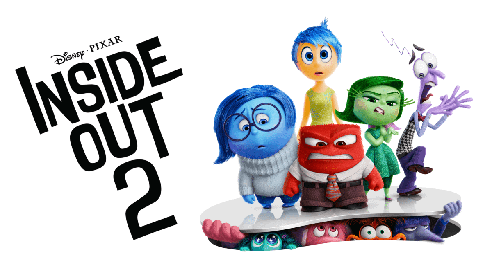
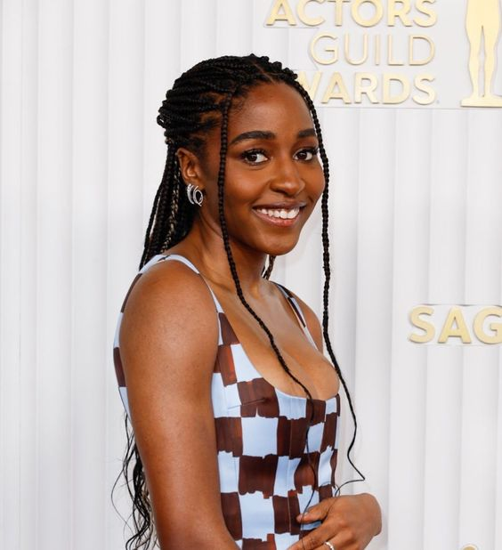
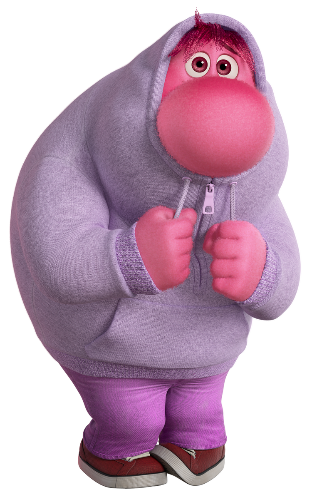

Inside Out 2
"Inside Out 2" กลับมาพร้อมการผจญภัยในจิตใจที่เต็มไปด้วยสีสันและอารมณ์หลากหลายอีกครั้ง คราวนี้ ไรลีย์ได้โตขึ้นและกำลังเผชิญกับความท้าทายใหม่ในชีวิตวัยรุ่น ความรู้สึกอย่าง Joy, Sadness, Anger, Fear และ Disgust ต้องร่วมมือกันเพื่อช่วยไรลีย์ในการตัดสินใจและการปรับตัวต่อเหตุการณ์ที่เปลี่ยนแปลงไปในชีวิตของเธอ นอกจากนี้ พวกเขายังได้พบกับความรู้สึกใหม่ๆ ที่เข้ามาเพิ่มความวุ่นวายและความสนุกสนานมากขึ้นในการผจญภัยครั้งนี้ เตรียมพร้อมหัวเราะ ร้องไห้ และรู้สึกอบอุ่นใจไปกับเรื่องราวสุดประทับใจที่แสดงให้เห็นถึงความสำคัญของทุกอารมณ์ในชีวิต
- ผู้กำกับ: Kelsey Mann
- โปรดิวเซอร์: Mark Nielsen และ Pete Docter
- ผู้เขียนบท: Meg LeFauve และ Josh Cooley
Voice Actors
Maya Thurman
รับบทเป็น"วุ่นวาย"

"อิจฉา"
Ayo Edebiri
รับบทเป็น"อิจฉา"
Paul Walter
รับบทเป็น"อ๊ายอาย"
Addel Exechopoulos
รับบทเป็น"เฉยชิล"
พบกับอารมณ์ใหม่!!
Anxiety
วุ่นวายEnvy
อิจฉา

Embarrassment
อ๊ายอาย